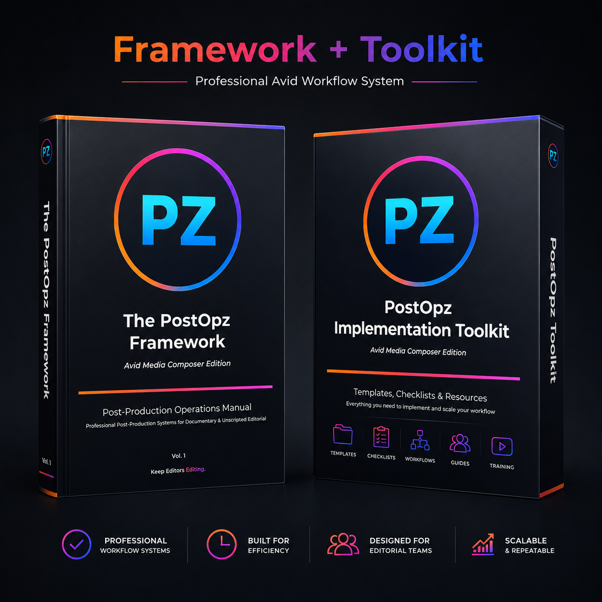
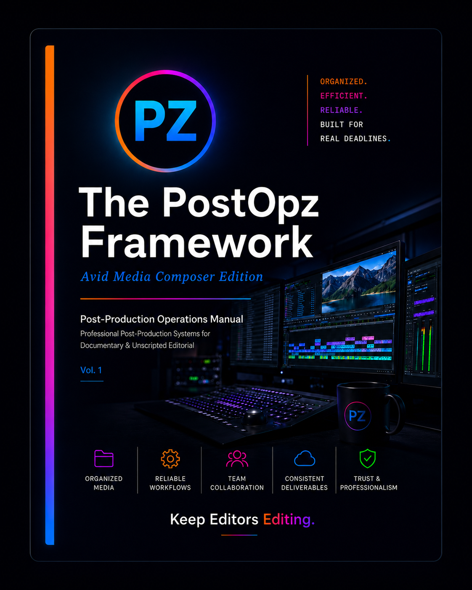
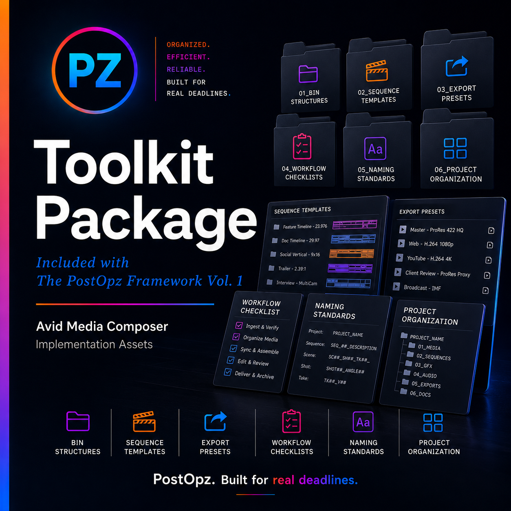

01
Project setup gets messy fast.
Camera originals, proxies, archival, scripts, graphics, music, and exports need clear homes before editorial pressure hits.
The PostOpz Framework Vol. 1 is a professional post-production operations manual and implementation toolkit for Avid-based documentary, unscripted, branded, and long-form editorial workflows.

Most new assistant editors learn the software before they understand the system around the software. This framework closes that gap with a practical, production-tested approach to organization, communication, version control, review exports, and turnovers.
Camera originals, proxies, archival, scripts, graphics, music, and exports need clear homes before editorial pressure hits.
Sequences, bins, naming, markers, review exports, and turnovers should feel predictable across the entire production.
Mix and color turnovers reveal whether the project was organized with finishing in mind from the beginning.

The manual walks through the assistant editor workflow from project creation through final delivery support. It is designed as a real-world reference for AEs, editors, post PAs, freelancers, and small post teams who need structure before production pressure arrives.
Every chapter is designed around real post-production decisions that affect editors, producers, finishing teams, and delivery.
Project creation, media management, folder structure, camera originals, proxy separation, and professional naming standards.
Timeline structure, sequence templates, sync maps, grouping, multigroups, transcripts, ScriptSync, and stringouts.
Archival footage, images, graphics, music, sound effects, source vendors, licensing logic, and searchable bins.
Review exports, slate standards, BITC, version naming, mix prep, color prep, turnover packages, and communication standards.
The toolkit gives you deployable implementation assets to support the workflow taught in the manual. Instead of rebuilding the structure from scratch, you can start from a professional PostOpz template system and adapt it to your production.

Professional bin organization for editorial, media, sequences, archival, GFX, music, SFX, exports, and turnovers.
Reusable timeline structures for sync maps, stringouts, editor support, review exports, mix prep, and color prep.
Reference standards for review exports, web outputs, producer reviews, and professional delivery support.
Daily AE, sync map, multigroup, ScriptSync, stringout, export, and turnover checklists.
Project, sequence, scene, shot, take, export, and turnover naming conventions built for clarity.
A repeatable structure for keeping production media, documentation, exports, audio, graphics, and finishing assets organized.
Ideal for post PAs moving into AE roles, new assistant editors, editors who want cleaner project systems, film school graduates, freelancers, documentary teams, unscripted post teams, branded content teams, and small production companies building repeatable editorial workflows.
A professional workflow manual plus practical implementation assets designed to help you work with more structure, confidence, and consistency in Avid-based post-production.
75-page PostOpz Framework Vol. 1 — Avid Media Composer Edition.
Project templates, bin structures, sequence templates, export references, checklists, and naming standards.
Instant digital access after checkout.
Buy NowFor team licensing, education, facility use, or internal training, contact hello@postopz.com.
No. This is a post-production operations framework. It teaches the workflow around Avid: organization, sync maps, grouping, transcripts, stringouts, exports, communication, and turnovers.
No. It is useful for post PAs, new AEs, working AEs, editors, and small teams who want a cleaner, more professional workflow foundation.
Documentary, unscripted, branded, reality, long-form, digital, and editorial teams using Avid Media Composer workflows.
The standard purchase is for individual professional use. For team, school, facility, or internal training use, contact hello@postopz.com for licensing.